Everything in here is my own thinking and personal knowledge from four years working at McDonald's (Dickson ACT, 2013–2017). It's not research. It's not sourced from the web, McD's public materials, or anyone else's notes.
I used AI to transcribe and structure what was in my head into the format you see here — but the underlying content, the observations, the framings, the judgements about what matters and why — all mine.
Version: v2 (May 2026) Source experience anchor: Ben worked at McDonald's Canberra (Dickson ACT store, among others) for 4 years, 2013–2017, from age ~14 to ~18. Crew member only — front of house (front counter, drive-through, McCafé, drinks). Never a crew trainer or manager.
Citations trace claims back to one of: deep-dive transcript, deep-dive slides, deeper-dive notes, deeper-dive transcript, QSR notes, brain-dump (operating model / personas / feature use cases / examples).
[DATED] tags flag things likely to have shifted since 2017.
McDonald's corporate holds essentially all the power; the franchisee–franchisor relationship is strict and top-down. Franchisees control very little (deep-dive transcript; QSR notes).
Becoming a franchisee: - 12-month full-time, unpaid training program required before you qualify to buy a franchise (deep-dive transcript; deeper-dive notes). - Then you pay $1–2M AUD for franchise rights (deep-dive transcript). - No choice of location. Corporate sends you where they need you. One ex-colleague worked his way up to franchisee in Canberra and was sent to Alice Springs for his first store, then later Adelaide (deep-dive transcript; deeper-dive transcript). - Once awarded a store, the new franchisee must work in the store full-time (in uniform-ish, on headset, alongside crew) for an initial period (deep-dive transcript; deeper-dive transcript). - McDonald's usually owns the land and rents it to the franchisee (deep-dive transcript; deeper-dive transcript).
What corporate controls (i.e. franchisee has zero discretion over): - Menu, food, recipes - Pricing strategy - Promotions, new product rollouts, Happy Meal cycles - Equipment — make, model, supplier (e.g. "this is the soft serve machine you have to buy, this is the supplier, this is the cost") (deeper-dive transcript) - Training content - Operating standards
Where variation creeps in: purely in implementation on the ground. Stores can supplement and tweak how things are executed, but only within the rails. The severity of how strictly something must be done by-the-book depends on the area — food and safety are tight, soft stuff (e.g. internal communication, incentives) has slack (deeper-dive transcript).
Pecking order among franchisees: Larger franchisee families exist who own multiple stores. Ben's store changed hands during his time there to a family that owned ~15 Canberra stores; the actual owner and 2IC were essentially never on the floor — there were more management layers (deeper-dive transcript).
Sales access: The route to selling anything to McDonald's is through corporate, not through franchisees — even franchisees with 10+ stores don't have buying authority over anything material. This is a structural contrast to looser franchise QSRs like Domino's, where franchisees have real discretion (deep-dive transcript).
Investment thesis: Despite the lack of control, it's a "pretty sure thing" — average mid-2010s store did ~$500K profit/year even when only "performing alright" [DATED] (deep-dive transcript). Ben can't recall a McDonald's closing for underperformance (one anecdotal exception: Newtown).
Aside / interpretation: It's less "franchise" in the conventional sense than "managed partnership with sweat equity." Comparable to a law firm partnership model — pay your way in, then work hard for the privilege (Speaker 3, deep-dive transcript).
(brain-dump: operating model)
For a licensee or franchised entity, the paramount driver is maximising profit. This financial imperative fundamentally shifts the risk/reward calculation around quality and operational standards. Franchisees are inherently more inclined to:
…regardless of what corporate's stated expectations are. This is structural, not a character defect — when the entity bearing the cost of compliance is the same entity capturing the profit upside from non-compliance, you get friction.
Implication for the SC pitch: Any initiative that succeeds inside McOpCo (where staff are corporate employees on fixed salaries and just execute) cannot be ported into the franchise base by re-running the same playbook. The franchise rollout demands shifting the sell from "visibility/control/quality adherence" (corporate's lens) to "tangible workload benefit for frontline management" (franchisee/shift manager/restaurant manager/area supervisor lens). See §2.2.
Most Australian McDonald's stores are franchised. Corporate operates a handful directly — McOpCo (McDonald's-Owned & Operated). Ben's-era language uses "corporate stores"; McOpCo is the industry standard term and the one McD uses internally.
(brain-dump: operating model)
This is the critical reframing. McOpCo stores exist primarily as controlled operational laboratories — proving grounds for new systems, standards, equipment, and operating models. Profit is a secondary outcome, not the dominant objective.
Why this works: - Staff are corporate employees on fixed salaries, so there's no profit-motive resistance to executing new corporate directives. - Compliance is essentially inherent — the staff just do what they're told. - A diverse portfolio of McOpCo locations covers more operational variation than a single test kitchen at HQ ever could.
The dominant objective is establishing a perfected operational model and rigorously testing new concepts so they're robust and scalable before wider deployment to the franchise base.
(brain-dump: operating model)
Translating a McOpCo success into the franchise system is not a copy-paste exercise. Initiatives that function flawlessly in McOpCo conditions must be adapted for franchise economics (see §1.1 — profit-motive friction).
What changes in the sell to franchisees:
| McOpCo framing | Franchise rollout framing |
|---|---|
| Visibility for corporate | Tangible benefit for the frontline manager |
| Quality and standards adherence | Workload reduction — fewer cumbersome forms |
| Brand-level outcomes | Time saved, annual obligations made less burdensome |
| Centralised control | Streamlined execution for shift mgrs / restaurant mgrs / area supervisors |
The key adoption levers are paper elimination and improved efficiency through digitisation — pitched directly at the frontline managers responsible for execution. The corporate-side benefits land too, but they're not what unlocks adoption.
Implication for the SC pitch: When McD evaluates SC vs Donesafe, the cleanest performance signal will come from McOpCo data, which is also the easiest environment to roll something into. But the commercial logic — what justifies the platform spend across the whole estate — depends on whether the franchise base will actually use it. Frame the franchise rollout as "less paper, less binder filing, more efficient annual obligation completion for restaurant managers and area supervisors" — not "more corporate oversight."
Open item: Confirm current McD AU split between McOpCo and franchised stores. Not in Ben's source material.
The official McDonald's "Pathways to the Future" diagram lays out the headline hierarchy (deep-dive slides). The brain-dump (personas) sharpens these into operational personas with care factor, age, and motivations.
Rough headcount per store (deeper-dive notes; deeper-dive transcript): - ~200–300 crew members (high turnover, rolling hires every 1–2 weeks) - ~20–50 crew trainers (call it ~10% of crew) - Max ~10 shift managers - 2–3 senior managers (restaurant manager + assistant restaurant manager / 2IC, sometimes a department manager — see §3.5)
Franchise owner-operator pathway: Some franchisees come up from crew. Ben knows of a McD Corporate senior (head of commercial insights & planning) who started as crew, became youngest restaurant manager, then corporate. A former AU CEO has a similar story arc (deeper-dive transcript).
Visual reference: the official "Pathways to the Future" poster is the canonical artefact (deep-dive slides) — worth higher-res if needed for the demo.
(brain-dump: personas; deep-dive transcript)
| Attribute | Value |
|---|---|
| Age | 14–18, avg ~16 |
| Employment | Casual, hourly, low wage |
| Tenure | Transient — high turnover |
| Care factor | Low — temporary, low-wage, low investment in store's long-term success |
| Number per store | ~200–300 |
Why crew should NOT be the primary user of any new platform:
Demographic colour: - Weekday 9–5 (school term) skews 20s+; weekday evenings, weekends, school holidays skew teenage. - Ben's-era: front-of-house skewed female + "talkative guys"; kitchen skewed male. [DATED — McD's stated DEI posture has shifted since 2017.] - Track preference (front/back/cafe) is nominally asked at interview but in practice you go where the store needs you.
(brain-dump: personas; deep-dive transcript; deeper-dive transcript)
| Attribute | Value |
|---|---|
| Age | 16–21 |
| Employment | Casual, ~50c–$1/hour extra over crew (brain-dump says "maybe $1/hour"; deep-dive transcript says "50c") |
| Tenure | Slightly less transient than crew but still casual |
| Care factor | Slightly above crew — more invested because of the responsibility |
| Number per store | ~20–50 |
A crew trainer is barely elevated from crew — distinct shirt colour (blue, in Ben's store), trained on how to train, paired 1:1 with new crew on early shifts (see §4).
Important: Crew trainers are the most likely cohort to use store-based digital tools — e.g. a shared store iPad — for operational tasks: tracking training progress on others, ticking off competency checklists (SOCs — see §4), procedural lists. A localised digital interface (not personal device, not desktop) is the right form factor for them.
Terminology: McD's "Pathways to the Future" official material uses Crew Coach; Ben consistently uses Crew Trainer. Treating these as the same role with a rename — Crew Coach is the current term.
(brain-dump: personas; deeper-dive transcript)
| Attribute | Value |
|---|---|
| Age | 19–25 |
| Employment | Hourly or low-tier salary; most are part-time uni students |
| Path in | Always promoted from crew — never hired directly into the role |
| Care factor | Low to medium |
| Number per store | Up to ~10 |
Motivations and behaviour: - Primary focus: maintain a smooth, trouble-free shift; minimise conflict; avoid scrutiny from the Restaurant Manager. - Most aim to meet minimum expectations to avoid reprimand and secure ongoing employment — not to drive performance. - A minority of high-performers genuinely pursue business targets, but they're the exception. - Big behavioural delta between shifts run by a shift manager (especially quiet periods — Sunday nights, overnight) and shifts when the Restaurant Manager is present.
Pitch implication: If the platform increases the work the shift manager has to do, adoption fails. If it reduces work and lowers the chance of getting in trouble (fewer missed steps, less paperwork to chase), adoption is plausible.
(brain-dump: personas; deeper-dive transcript)
The first salaried rung. Significant commitment from the employee.
Assistant Restaurant Manager (2IC):
| Attribute | Value |
|---|---|
| Age | Mid 20s onwards |
| Employment | Salaried |
| Care factor | High for overall store performance |
| Working style | Highly operational — "in the trenches" alongside crew and shift managers; willing to do any task |
The 2IC is the most reliable operational leader inside the store — professional demeanour, hands-on, real engagement with quality and process. They're materially more rigorous than the average shift manager (deeper-dive transcript).
Department Managers (same hierarchical level as Assistant Manager):
(brain-dump: personas — net-new content versus v1)
Each store has up to three Department Managers, aligned to operational pillars:
Role blur: - It's likely the most senior, experienced, motivated shift managers wear a department manager hat alongside their shift mgr duties. - Possible the 2IC also takes on one of the department manager hats. - Boundaries are blurry — overlap with the assistant manager and senior shift managers is the norm.
Why department managers matter for the pitch: They map directly onto the QSC pillars and onto McD corporate teams — see §9.5 Framework Triangulation. This three-way alignment is one of the strongest demo angles for showing SC can "speak in McD's language" across departments.
(brain-dump: personas; deeper-dive transcript)
| Attribute | Value |
|---|---|
| Age | Late 20s (high achievers) up to 40s |
| Employment | Salaried |
| Working hours | Closer to traditional business hours (e.g. ~9-to-5 Mon–Fri) — distinct from the shift-based work of their subordinates |
| Care factor | Highest among store staff |
| Style | Less hands-on than the 2IC; more administrative / strategic / vendor / office work; steps in during peak |
Their presence dramatically improves rigour and performance — the "RM is in" effect is observable across the floor.
(brain-dump: personas)
The role between the store and the franchisee/corporate. Net-new persona vs v1.
| Attribute | Value |
|---|---|
| Age | 30s–40s |
| Working style | Very mobile — covers a cluster of restaurants |
| Lived experience | Run off their feet — long hours, too much to do in too little time |
| Care factor | Highly variable — depends on the licensee/franchisee culture they're embedded in |
Two archetypes (per brain-dump):
Pitch implication: Area supervisors are a high-value, high-leverage persona for SC. They visit multiple stores; they need lightweight tooling (mobile-first, fast to log issues during a walk-through); they're the natural carrier of multi-site audit data back to the franchisee/corporate. Time-pressed → they'll reward any tool that genuinely saves them effort. They are the persona where "less burdensome compliance" lands hardest.
(brain-dump: feature use cases; deeper-dive transcript by inference)
Above area supervisors sit corporate field roles — operations consultants conducting performance reviews, corporate teams executing brand-standard audits across many sites. Personas not fully detailed in Ben's sources — flag as a gap for the pitch.
(deep-dive transcript)
The brain dumps don't directly distinguish McOpCo personas from franchise personas. The most relevant differences:
Otherwise the role names and rough hierarchy hold.
McDonald's is a Registered Training Organisation (RTO) in Australia — crew can earn Cert 1, 2, 3 in retail and McD-specific qualifications through the training pathway (deep-dive transcript; deeper-dive transcript).
Standout strength: Compared to friends working at other QSRs and big corporates, McD's training is more structured and consistent — Ben treats this as one of McDonald's genuine strengths (deeper-dive transcript; deeper-dive notes).
MeTime is McDonald's central employee system [DATED — "called something slightly different now"] (deeper-dive transcript). It houses: - Personal details, bank details - Roster / shift acknowledgement - Training modules and pathways - Pay slip delivery (via personal email linked to the account)
Login is via employee ID (a number, e.g. "7…") plus a password — and an additional shorter PIN (4 or 6 digits) for clock-in screens, plus an optional fingerprint enrolment for faster clock-in (deep-dive transcript; deeper-dive transcript).
[DATED] At the time, MeTime was "very ugly" and visibly stitched-together — different training modules would sometimes open in a new browser window, others embedded; SCORM-style; some content built on Flash and therefore not portable to tablet/phone (deep-dive transcript; deeper-dive transcript). Dave (in the deep-dive) noted current MeTime — possibly renamed "MeOut" — sits behind a Microsoft-stack IDP front door that launches the underlying tools (deep-dive transcript). [Confirm current name and stack for the pitch.]
Pre-shift / onboarding: - Online onboarding modules done before coming into the store: physical restaurant security, health and safety, slips/trips/falls (deep-dive transcript; deeper-dive transcript). Roughly 3 hours total of online + walkthrough before doing anything customer-facing (deep-dive slides; deeper-dive transcript). - An informal store walkthrough by the restaurant manager or someone delegated (deeper-dive transcript).
Universal first step: Everyone starts on cleaning. First few shifts, ~3 hours each, are just cleaning, paired with a crew trainer (deep-dive transcript; deeper-dive transcript).
Track fork — front vs back: - Back: kitchen. - Front: customer-facing. - You're nominally asked your preference but in practice are placed where the store needs people (deeper-dive transcript).
Front-of-house progression (Ben's track): 1. Cleaning (everyone) 2. Secondary front — fries, drinks/beverages, desserts (still not customer-facing) 3. Front counter — taking orders 4. Drive-through (treated as a distinct level) 5. McCafé — considered the "fancy" / most skilled (some training is positioned as more advanced) (deeper-dive transcript)
There are no fixed timeframes — progression is driven by hours worked and the store's operational need. Rough guide ~6 months between levels but no formal cadence (deeper-dive transcript). If the store needs more trained people in an area, they push more crew through; otherwise it sits.
For each new area, the loop is (deep-dive transcript; deeper-dive transcript):
(brain-dump: feature use cases)
The "competency sheet on McD letterhead" Ben describes is the Station Observation Checklist (SOC) — McD's named, standardised instrument for training validation. SOCs are the mechanism by which a crew member is certified competent on a station.
Historical workflow [DATED 2017]: - Paper SOC (carbon-copy form), McD letterhead - Crew trainer systematically checks off competencies during a live shift - Top copy filed in a binder; binder seldom referenced afterwards - Sign-off eventually transcribed/uploaded into MeTime; visibility back to the worker is weak (§4.8)
Current trajectory: - Migration to iPad-based digital checklist is partially underway (brain-dump: feature use cases). McD is incrementally replacing the paper SOC with digital checklists that support rich media (photo/video) as evidence. Worth confirming current state with Paul/Kathy — this matters because if SOCs have already moved to a SafetyCulture-like format in some pilots, the demo can plug into something tangible.
Why this matters for the pitch: SOCs sit at the intersection of training, compliance, and operations. They are McDonald's-named, McDonald's-standardised, and ubiquitous. Speaking in "SOC" language signals fluency. Replacing the paper-and-binder SOC workflow is a concrete, repeatable wedge that scales across every station in every store.
Quality, Service, Cleanliness (QSC) — plus a fourth, V (Value) — are the four pillars. Completing each track earns a coloured star on your name badge (deep-dive transcript; deeper-dive transcript; deep-dive slides):
The mechanic: the visual training path on MeTime shows a gridded RPG-style map with locked/unlocked sections. When you complete a sub-track, the system prompts "go collect your star from your manager," who pulls one from a bag and physically pins it to your shirt (deeper-dive transcript).
Ben rates the gamification as effective for a teenage workforce. The visual locked-path metaphor and physical star pinning both help. Teenagers actually liked it (deeper-dive transcript; deeper-dive notes).
Highly variable, depending on when the module was last updated (deep-dive transcript; deeper-dive transcript; deeper-dive notes):
Production: All content in English only (90–95% confident — deeper-dive transcript). Produced by McDonald's Australia.
External reference: A McD POS training simulator exists publicly at https://mcdonaldspostraining.app/download/ — Ben notes other countries have access to a POS simulator for front counter training; this didn't appear to be used at his Australian store (deeper-dive notes).
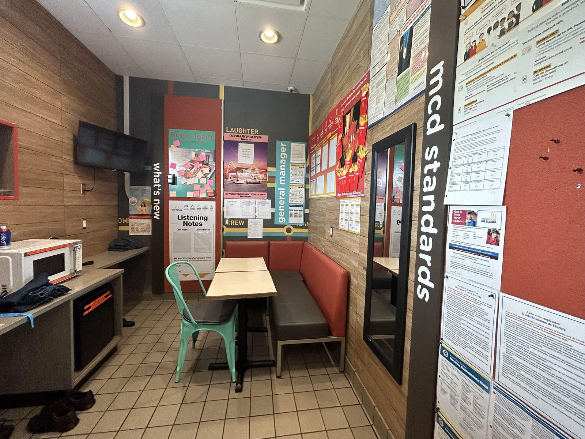
[DATED] Ben suspects desktop-only training likely persists in some form because of the legacy content base, but assumes there's been some progression. Worth confirming.
(Synthesised from deeper-dive notes and deeper-dive transcript) - Structured onboarding — notably more structured than friends' QSR experiences - 1:1 crew trainer pairing during early shifts — hands-on, effective for hands-on tasks - Gamified progression (MeTime visual paths, star badges) — tangibly motivating for a teenage workforce - Newer training modules (gamified, video-tailored to younger audiences) — genuinely good - Competency checklists — gave a clear bar for "done" - Drive-through gamification (perfect car count, national rankings) — created real competitive motivation on the floor - Shift/rostering ↔ kitchen screen integration for youth labour law violations (see §10)
(Synthesised from deeper-dive notes and deeper-dive transcript) - Theory–practice disconnect — long theory sessions in the crew room (sometimes 30+ min) with no immediate floor application. Ben prefers see-do-see-do loops. - No POS simulator — front counter training happened on live customers (referencing the "fourth register" workaround where the kitchen ignores incoming orders, but it's still live). - Inconsistent training quality — heavily dependent on when content was last updated. Older areas (e.g. desserts, drinks/McFlurries, frappes) had almost no structured training — "go out and figure it out." - No quick reference during service — seasonal items (McFlurries, frappes, shakes) only had printed recipes stuck on machines; limited space, can't fit everything. No way to look up ratios mid-shift. Quality drops off. Ben pondered smart glasses, voice (noisy), or a side-tap interface; rejected AI typing as too slow. - Weak feedback loop — competency checklists get ticked but feedback doesn't reach the worker meaningfully. - Informal annual refresher — so casual workers often didn't know it was happening. No real mechanism to catch and correct skill drift. Ben attributes this to low effort, not intent. - Noisy training environment — crew room with kitchen noise behind the wall, no headphones. - No at-home training — minimum engagement is 3 hours of paid time, so they don't push at-home training (would have to pay you for 3 hours). - Paper-heavy scheduling and communication — handwritten availability diary, notice boards, Facebook group. Only beginning to digitise as Ben left (2017).
Hardware: Touch-screen POS at every counter. Specific layout: numbered keypad (0–9), tabs for Breakfast/Lunch/Dinner/Drinks/Desserts/Condiments/LSM-Promo, value/size selectors (S/M/L), make-meal, void line, function buttons (deep-dive slides — POS photo).
Auth: Login is your MeTime employee ID + a 4–6 digit code, or optional fingerprint. In practice [DATED] tills are rarely actually logged in as the right person — Ben says he was "very rarely actually logged into a POS that had my name on it" — usually someone from shifts earlier (deep-dive transcript). Fingerprint was optional in Ben's time. (Likely stricter now.)
Order-to-kitchen shortcut: As soon as you press an item, it appears on the relevant kitchen display screens around the store — before the customer has paid. The kitchen can start making the order while you're still taking it. Net wastage from cancellations is worth the speed gain (deep-dive transcript; deeper-dive transcript). The first thing on the POS starts the timer (deep-dive slides — top-left "24 (27)" highlighted).
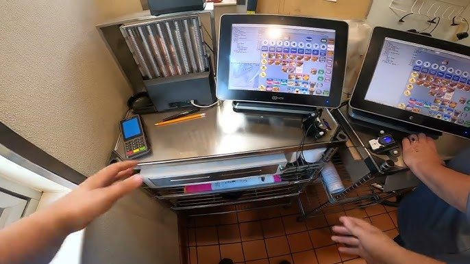
Every station in the store that makes or serves something has a KDS tailored to it. Filters are station-specific — the cafe screen only shows cafe items; the drinks station only shows drinks; the assembly line only shows what they assemble. (deeper-dive transcript; deep-dive slides)
Mechanics (deep-dive slides; deep-dive transcript; deeper-dive transcript): - Orders appear instantly as POS items are entered. - Each order shows the items, the side (1 or 2) it belongs to, and a paid/unpaid marker (bottom bar — "Paid" highlighted in deep-dive slides screenshot). - Timer starts the moment the order appears. - Color progression: grey → green → yellow → red as it runs over time. - A rolling average is displayed across a sliding window (visible at the bottom of the screen — deep-dive slides). - The order clears when the relevant person presses serve on the bump bar.
Bump bars: A physical bar with hard buttons — not a touchscreen (in most cases) — sitting below the screen. Buttons include serve/hold/receipt/next. Some stores are migrating to touchscreens for these but most are still bump bars (deeper-dive transcript).
Per-station granularity: In a fully staffed line, even individual sub-stations like the bun toaster get their own screen telling them which buns to toast in what sequence, so their speed is tracked (deep-dive transcript).
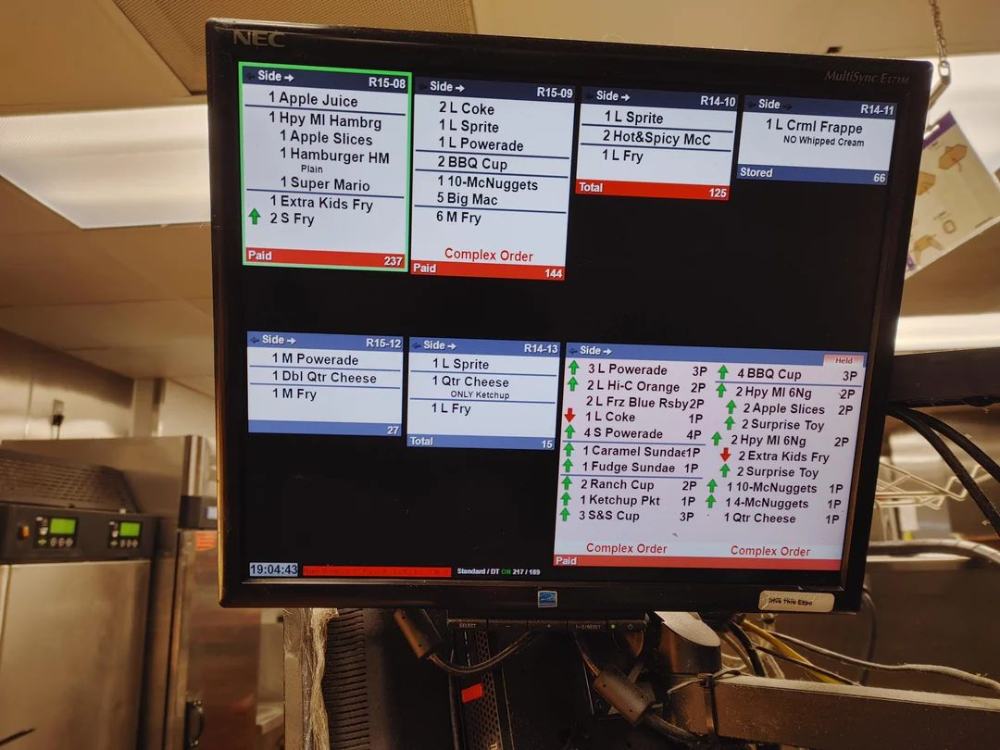
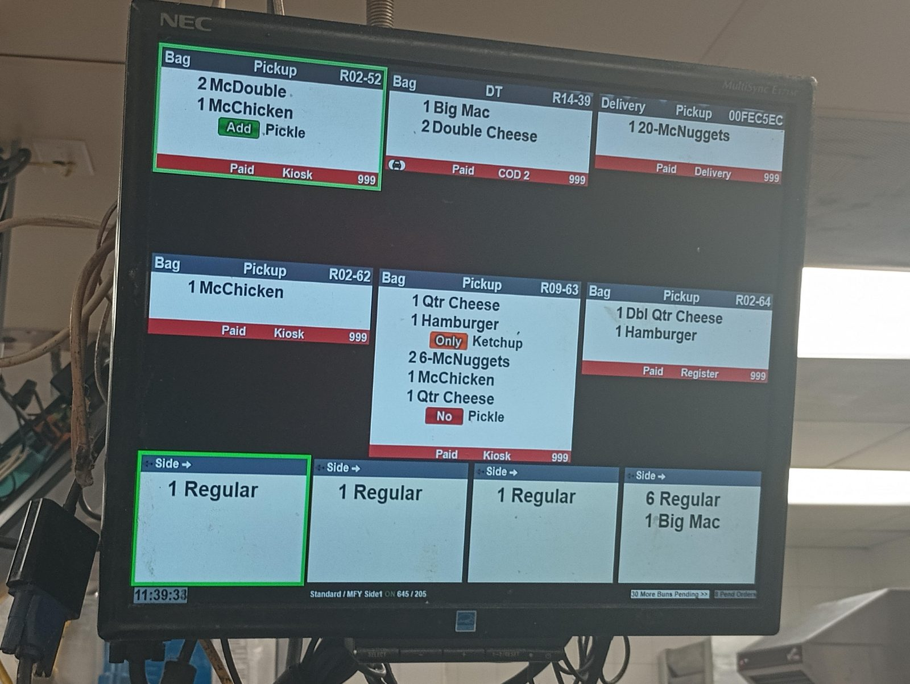
Management overlay: Managers walk around with sticky notes / receipt-paper goals stuck to the top of screens — "this is your goal at the end of this shift" — incentivising with meal rewards for hitting numbers (deep-dive transcript; deeper-dive transcript).
Consequences for missing metrics: No strict punishment — too many uncontrollable variables. Manager nags ("come on, why's your screen all red?"); Facebook posts or notice board reminders if a trend gets bad (deeper-dive transcript).
The most heavily instrumented part of the store.
Targets (deep-dive transcript; deeper-dive transcript; deeper-dive notes): - 3 minutes 30 seconds total — sensor entry to sensor exit. This is the hard ceiling. - 2 minutes 30 seconds goal — for the perfect car count streak (see §6).
Why it's so optimised: Drive-through can be up to ~50% of store revenue (Dave's commentary in deep-dive transcript — research-derived). Unlike the front counter where you can serve the next person if one is waiting, drive-through cars must be served in arrival order — there's no parallelism beyond two lanes, except the "park-and-wait" option (a button that pushes a slow car off to the side for kitchen to catch up) (deep-dive transcript).
Two-lane operation: Most drive-throughs have two order lanes. Officially you need two order-takers; in practice 99% of the time it's one person handling both lanes — toggling mic between lanes, processing payment for one car while taking the next car's order (deep-dive transcript). The drive-through screens show two order screens for this reason.
Sensors: Embedded at the start (entry) and end (exit) of the drive-through path. Trigger the timer.
CSS / Car Count display (deep-dive slides, screenshots): Shows real-time per-station progress through the drive-through — Order 1, Order 2, Cash (window 1), Present (window 2), Pull Forward — with target times and live performance percentages per station. Total time per car displayed bottom-right. Cars in lane counter top-right.
[DATED — confirm exact target seconds for current AU stores; the deep-dive slide screenshots reference an OEPE metric and slightly different targets, e.g. COD1/COD2 0:30, Cashier 0:25, Presenter 0:25, PullForward 1:00.]
(deep-dive transcript; deeper-dive transcript)
Speakers throughout the store; everything beeps (deep-dive transcript): - Drive-through booth: timer beeps escalate as a car approaches and passes time thresholds. At 3:30 the final sound is "like something going down the drain" — you've lost the car. - Kitchen speakers: drive-through live feed + station alerts. - Fryer stations: 3:30 cook cycle, shake at 30s, beeps at every interval. - Cooking stations: each beep on cycle. - Hand-washing stations: beep. - "Everything beeps." Ben describes hearing it in his head after Saturday night shifts.
Drive-through has automated drinks machines that pull the cup, ice, and pour with no human intervention. Originally you'd key it in directly; now it integrates with the POS feed — as the order is entered at the front, the drink starts being made automatically downstream (deeper-dive transcript). Ben flags this as one of the more impressive integrations he saw.
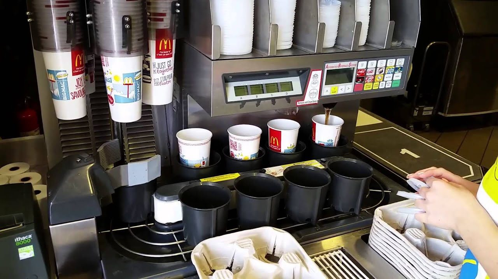
(deep-dive transcript) - No flipping patties. Double-sided clamshell grill — put patties down, select which type (7 different patty types), press button, grill clamps down, cooks both sides simultaneously, raises, you remove. - Cook times automated — no human discretion. Humans can manually pull early in a rush (managers do this with fries occasionally). - Sydney airport store is referenced as next-level automation (someone else's anecdote — not Ben's).
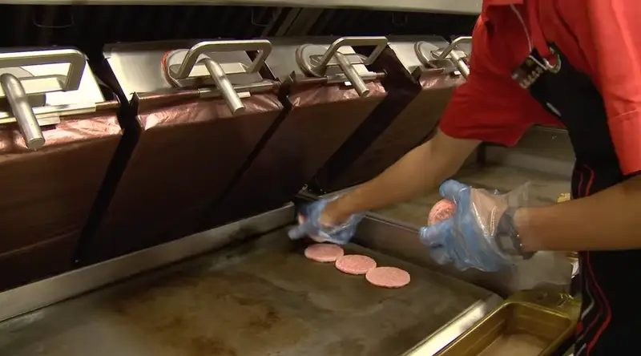
(brain-dump: examples)
The fry station illustrates a wider pattern: there's the standard procedure McD has trained for, and there's the informal, crew-evolved technique that happens in practice. Example:
The informal technique is accepted crew-side as "more thorough drainage" and gets passed down crew-to-crew. It is not a trained, sanctioned procedure — and it puts mechanical stress on the hood mounting that wasn't designed for it. See §8.1 for a specific incident this contributed to.
Pattern to flag: Wherever the standard procedure is silent or feels slow, crew invent shortcuts. Those shortcuts are invisible to corporate, untracked, and propagate by demonstration. They're a structural source of safety incidents and quality drift.
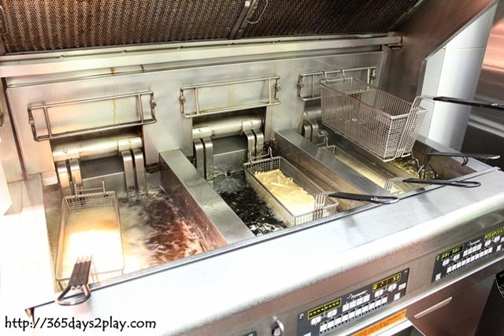
(brain-dump: examples)
Beyond the standard demand peaks (weekend evenings, school holidays), specific local events drive store-level extreme peaks. Most relevant for the Canberra context:
Other AU stores will have their own known events (regional shows, sporting fixtures, festivals). The general lesson: corporate-level demand forecasting is good but doesn't capture every regional anomaly — store managers carry that knowledge.
(deeper-dive transcript)
Availability: - Initial availability set online during application — full calendar of available/not available per hour over a 7-day rolling week. - [DATED 2017] Ongoing updates done by hand in a black notebook in the manager's office — you'd write "not available [date]" or "regular availability now changes to X." Just being digitised as Ben left.
Roster delivery: - Weekly email to your personal email saying "your shifts are ready in MeTime." - You log in, see shifts, acknowledge. - No option to decline a shift in MeTime — if you couldn't work, you had to contact the store and find your own replacement.
On-shift assignment: - Shifts in MeTime show only your area (e.g. "DPS1: OTC/Asmbl/Pres/DD/DrvThru", "MC1: McCafé Barista", "Close Front (D/Thru)") — drawn from Ben's actual schedule for week ending 8 Jan 2017, Dickson ACT (deep-dive slides).
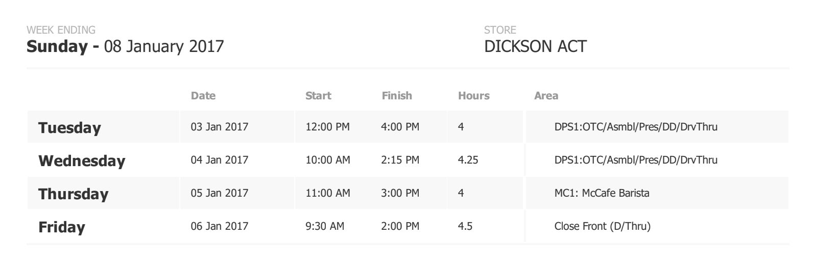
Clock-in/out screen: - Separate from MeTime — its own dedicated screen. - Enter employee ID + 4-digit PIN (or fingerprint). - Options: start shift, end shift, start break, end break. - Shows you what area you're on. - You cannot clock in before your shift start time — strict; Ben got told off for clocking in 2–3 minutes early. Crew huddle around the screen waiting for the time to tick over.
This is the most distinctive aspect of working in McDonald's. Everything is timed; everything is ranked; everything is gamified (deep-dive transcript; deeper-dive transcript).
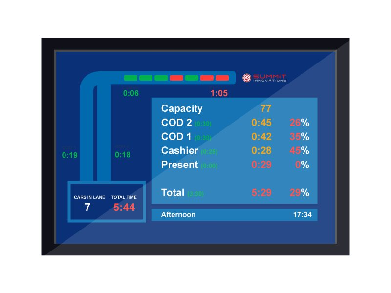
(deep-dive transcript; deeper-dive transcript; deep-dive slides)
The marquee metric. Behaves like a Snapchat streak: - Under 2:30 → perfect car, streak +1 - 2:30 – 3:30 → doesn't add to streak, doesn't break it - Over 3:30 → streak resets to zero
A dedicated screen behind the drive-through presenter shows: - Your store's current PCC - Your state rank vs every other store in the state - Your district rank - A leaderboard table (deep-dive slides show a Victorian district view: Mernda VIC 144 PCC #1, Scoresby VIC 144 PCC #2, etc., down to Barnawartha VIC at 14 PCC with 5:28 total time) - Per-stage breakdowns vs targets
Targets are also tracked at "this hour" and "day" levels — a wall-mounted small screen in Ben's reference photo shows "This Hour 3/745" and "Wyndham Waters VIC Perfect Car Count: 74" (deep-dive slides).
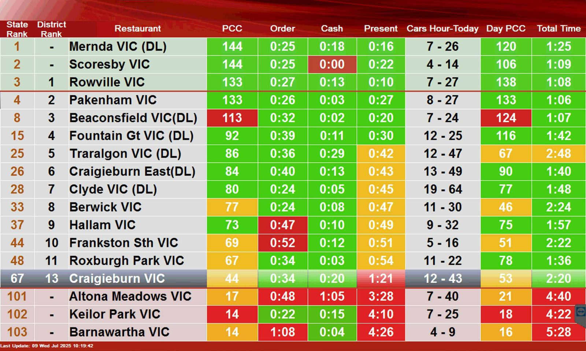
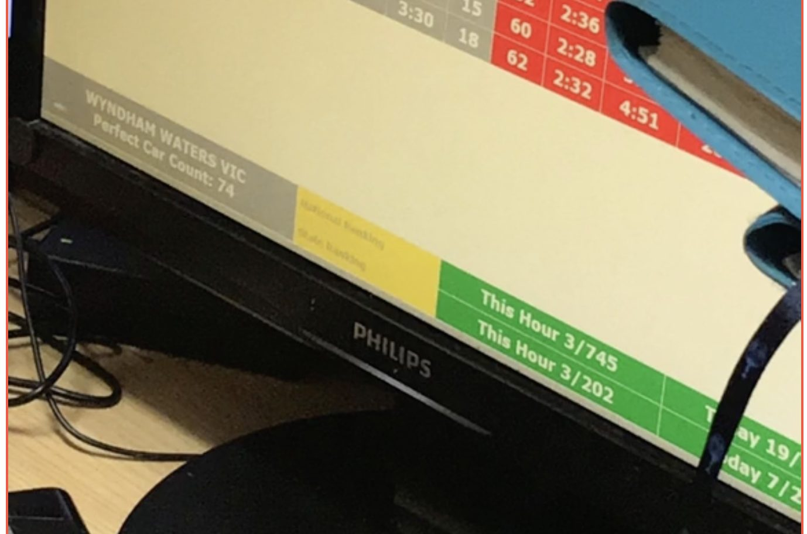
(deeper-dive transcript) - Carrot: national/state pride, manager-set goals ("get PCC to X by end of shift, free meal"), competitive streaks - Stick: the beeping, the screens going red, the verbal manager pressure on headset ("closed loop, closed questioning")
Reality check: Past a certain point — full drive-through, never-ending cars — the leaderboard becomes background noise. You're just trying to keep things moving. But the headset and beeping cannot be tuned out (deep-dive transcript).
Officially both matter. In practice, speed is #1 — easier to measure, directly drives revenue. Quality is checked retrospectively, mostly via customer complaints (deep-dive transcript; deeper-dive transcript).
(deep-dive transcript; deeper-dive transcript)
Most common causes of wastage: - Customer complaining about quality (cold, messy, missing) → remade - Customer customisation not delivered correctly → remade - Accidental wrong item made (wrong McFlurry flavour) - Order entered but cancelled by customer before paying — already made (the order-to-kitchen shortcut creates this)
Customer rights: Heavy deference to the customer. If they want a remake, they get a remake. No real friction (deeper-dive transcript).
(deeper-dive transcript)
Crucially: leaderboards are at the store / district / state level, never personalised to the individual. No public "Ben hit X this week." The competition is collective. Manager-driven personal incentives (free meal for hitting Y) are loose, store-by-store, often handwritten and pinned up.
McDonald's stores are built to dial capacity up and down dramatically within the same physical footprint.
(deep-dive transcript; deeper-dive transcript; deep-dive slides)
The main assembly line has a mirror — Side 1 and Side 2. Most of the time only one side runs. A manager can press a button and Side 2 comes online instantly: orders split across both sides, theoretical 2× capacity.
Triggers: - Pre-planned for forecasted demand (algorithms based on historical patterns) - On-the-fly by a manager seeing the queue build
The same line can be staffed at radically different densities (QSR notes; deep-dive transcript; deeper-dive transcript): - Overnight: 1–5 people total in the whole store, sometimes 1 person doing the entire line start-to-finish. "One big happy family." - Normal shift: ~10 people - Peak shift: ~15 people - Fully staffed (theoretical maximum): ~30 people — every sub-station broken out (bun toaster, meat-putter, topping assembler, packer, etc.)
The KDS infrastructure supports this granularity natively — when stations get split out, each gets its own filtered screen.
Some sites are physically doubled — two complete stores in one building, often with the second mothballed and opened only at peak (deeper-dive transcript). Ben names the one on the Sydney–Canberra highway as an example (likely Pheasants Nest or similar) — mirror-image layouts. Customer doesn't know; throughput is effectively 2× a single store.
(Distinct from the two-on-either-side-of-highway phenomenon, which is two separate stores serving opposing traffic directions.)
When a station isn't busy, you have a flex role — usually menial filler tasks. Ben gives examples: cut back cardboard in the stockroom; pre-make 100 chip trays; clean. McDonald's is strict that you never stand still — if there are no customers, you're cleaning or doing something (deeper-dive transcript).
(deeper-dive transcript)
Low overall in Ben's experience. Most common: - Burns and cuts — fry station especially. Oil splashes, hot metal contact. Ben routinely walked away with small burns. - Slips and falls — occasional, nothing dramatic.
Specific incidents Ben recalls: - Oil leak under the fry station during a busy period — he kept working; tray-slides along the floor "actually helped efficiency." - A fryer tray over the vat fell — Ben caught it precariously over hot oil.
(deeper-dive transcript; brain-dump: examples)
Ben is "sure there was something about logging near misses" — but his observation: it lived in a binder, and care factor varied by role.
Read: Process exists on paper [DATED 2017]; cultural follow-through varies by store and by individual manager. This is exactly the gap Donesafe was likely brought in to close.
(brain-dump: examples)
The dominant failure mode for incident reporting, as Ben observed it on the floor, is:
This pattern is the structural reason near-miss data underreports reality. It's not that crew don't notice; it's that the bridge from "noticing" to "documented in a system" is a single, overloaded human carrier (the shift manager) who's running a peak shift.
Pitch implication: Anything that collapses the report-creation friction — voice-to-text on a manager's already-in-hand device, instant photo capture, low/zero mandatory fields at capture time, AI populating the form post-hoc — directly attacks this failure mode. The system has to make it faster to log than to forget. This is concrete, hand-mappable to specific incidents Ben can speak to on Monday.
(brain-dump: feature use cases)
Structured inspections are ubiquitous in McDonald's operations and happen at multiple organisational levels. Each level uses inspections for slightly different purposes:
| Level | Who | Cadence / purpose |
|---|---|---|
| Within-shift | Shift Manager | Routine internal checks during the shift — cleanliness, line readiness, basic compliance |
| Daily / weekly | Restaurant Manager | Comprehensive store-level assessment; signs off on standards |
| Per-visit, multi-site | Area Supervisor | Walk-the-floor non-conformity logging across their store cluster; standards compliance |
| Periodic, multi-site | Operations Consultants | Performance reviews of restaurants |
| Periodic, brand-level | Corporate teams (Customer Service / Quality Assurance / Employee Relations — see §9.5) | Brand standard audits |
Common non-conformity types flagged during walk-throughs: - Unsanitary dining areas - Incorrect or damaged merchandising displays - Deviations from mandated staff procedures (uniform, handling techniques) - Equipment in disrepair
Historical state: Carbon-copy paper forms → filed in binders → seldom reviewed → no closed-loop on corrective actions.
Current trajectory: Migration to iPad-based digital checklists is partially in progress (see §10). The shift toward digital captures rich media (photos/video) as supporting evidence and ties non-conformities to follow-up actions automatically.
Why this is a strong angle for the SC pitch: - Audits already happen — this isn't introducing a new process, it's replacing paper with a better surface. - The same digital checklist instrument scales across all five levels above without bespoke tooling per level. - Closing the corrective-action loop (failed criteria → auto-created follow-up issue) is one of the most concrete "Donesafe replacement plus" value props.
(deeper-dive transcript)
When McD Corporate visits, the store transforms: - Double the crew on shift - Everything cleaned — Ben recalls cleaning walk-in freezer nooks "with a toothbrush" - Pristine execution to standard
The visit creates a clear before/after — and tells you what's normally not done.
(deep-dive transcript; deeper-dive transcript)
The most striking integration Ben observed:
The shift clock-in/out system (rostering, very desktop/internet-based) is connected to the kitchen display screens (in-store operating systems).
If an under-18 worker: - Works past 11pm on a weeknight, OR - Goes over the maximum continuous hours without a break
Then: - The manager gets a 5-minute warning - If not actioned, every kitchen screen in the store goes red with a "Shift Violation" banner - The restaurant stops functioning until the person clocks out / takes a break / leaves - No override.
Ben's inference: this almost certainly comes from a past court case or significant fine — McD doesn't want the legal exposure.
Why this matters for the pitch: It's the clearest demonstration of how McDonald's can integrate compliance triggers across systems when there's enough motivation (legal/financial). Most other integrations are weaker. Suggests they value tight cross-system enforcement when the stakes are high.
(deep-dive transcript; deep-dive slides; deeper-dive transcript)
(deep-dive transcript; deep-dive slides)
(deep-dive transcript; deeper-dive transcript; deeper-dive notes)
(deeper-dive transcript)
"There's never any gathering of any employees to disseminate information." Everyone's coming and going at different times — no shift-wide assembly. Hence the reliance on async (Facebook, notice boards).
(deep-dive transcript; deeper-dive transcript)
The cultural backbone (deep-dive transcript; deeper-dive transcript):
Stars on the badge correspond to QSC + M (McCafé) and possibly an "X" / V finisher (deep-dive transcript — see §4.4).
(brain-dump: personas; brain-dump: examples; gong call — Kathy quote, surfaced via brain-dump)
McDonald's uses three overlapping frameworks to organise operational accountability. They align imperfectly but consistently — and that alignment is a pitch angle.
| QSC pillar (cultural) | Store-level department manager (operational) | McD corporate team (functional) |
|---|---|---|
| Quality | Product Quality | Quality Assurance (incl. health inspector visits, food safety incidents) |
| Service | Customer Experience | Customer Service |
| (no direct QSC equivalent — people side) | People Performance | Employee Relations / Workplace Investigations (bullying, harassment, misconduct) |
| Cleanliness | (rolls up under Product Quality / Customer Experience depending on the issue) | (typically Quality Assurance) |
Kathy's quote from the Gong call (via brain-dump: examples):
"…customer service, employee relations team and quality assurance all use it for investigation purposes as well. So for example, they, if there's a food safety incident, they put it through our Donesafe as an incident… Quality assurance is the same. So they might have like, you know, health inspector visits they enter in there as well. But our employee relations team and our workplace investigation teams use it for obviously any, you know, bullying harassment investigations or misconduct…"
Why this matters: - The three frameworks agree on Quality, Service, and the People dimension. The crossover between QSC and the corporate team structure is the People dimension (corporate has it; QSC doesn't name it explicitly — it lives implicitly in Service). - One platform demonstrating it can serve all three lenses simultaneously is the "speak in McD's language across departments" angle. - The investigation-as-incident pattern Kathy describes (food safety incident → Donesafe → investigation) is exactly what SC's Issues + Heads-Up + Actions stack maps onto.
Demo angle: Prepare three example flows for Monday, one per corporate team — Customer Service / Quality Assurance / Employee Relations — each tied back to one of the QSC pillars and one of the store-level department managers. This shows McD that SC isn't just a Donesafe replacement; it's a single instrument that joins three frameworks they already use.
(deeper-dive transcript) - Loosely centralised, very informal. A manager prints a sheet of A4: "upsell $50 of bacon today, your shift gets a free meal." Pin it up. Done. - Never personal leaderboards. Always team/shift/store level. - Most recognition (e.g. a kudos in a customer review) might earn a shout-out on the notice board — that's it.
(deeper-dive notes)
When a worker arrives for shift, they need to know which station they're working today — and nothing else.
Per Ben (deeper-dive transcript): the one piece of useful periodic info is the new promotion / new Happy Meal, especially for back-of-house — recipes for new burgers, etc. Those get printed and pinned somewhere; no formal training, the expectation is read-it-on-the-board-and-assemble-it.
Workers would love to know who they're working with and which manager is on, but the business doesn't surface this — no operational value to the business.
(deeper-dive transcript)
(deeper-dive transcript)
The recurring observation: lots of systems running, very mixed integration.
Tightly integrated (good examples): - POS → KDS → Automated drinks machine (drinks make themselves from the menu data) - Rostering ↔ KDS for youth labour law violations (§8.4) — the standout - Order-to-kitchen short-circuit (drink/food prep starts before payment) - Clock-in screen ↔ what-area-am-I-on
Disparate / disconnected (poor examples): - Wastage capture (paper receipts from till → manually typed into a system somewhere) - Availability updates (paper diary in manager's office [DATED 2017]) - Training competency sign-off → MeTime, but the feedback loop back to the worker is weak (§4.8) - Reward structures (printed-on-A4-paper, pinned) - Communication (Facebook group + notice boards + email — three separate planets) - Inspection records (Ben: "inspections would go really far. Just digitising a lot of paper" would be low-hanging fruit)
Still paper-based [DATED 2017]: - Availability updates (black notebook) - Per-shift station assignments (handwritten sheet at manager's station) - Reward / incentive sheets - Station Observation Checklists (SOCs) — carbon-copy forms filed in binders; see §4.3.1 (the trajectory below is changing this) - Inspection / audit forms across all levels (see §8.3)
(brain-dump: feature use cases)
Migration of paper checklists/SOCs/inspections to iPad-based digital checklists is partially in progress. Key features driving the shift:
This trajectory is already underway inside McD — worth confirming with Paul/Kathy how far it's progressed and whether any of it is on SafetyCulture today. If the answer is "yes, on some pilots," the demo can plug into an existing internal advocate story. If "no, paper still," then SC's pitch is exactly the right wedge. - Some inspection / audit material - Near-miss / incident logging (binders) - Recipe sheets for new seasonal items (taped to machines)
Old MeTime: employee ID + password. No password reset to email [DATED 2017].
New version (per Ben/Dave): single sign-on with social login (deeper-dive transcript) — though Ben isn't sure if this applies to Australia specifically. Worth confirming.
(deeper-dive transcript)
Australia is one of McDonald's more advanced markets globally.
McDonald's Australia as RTO: the local entity is a registered training organisation in its own right (§4) — content is built for the Australian audience, in English only, by McDonald's Australia (deeper-dive transcript).
Corporate office location: Thornleigh (Sydney) is referenced as a canonical corporate-store location (§2; deeper-dive transcript).
[DATED — confirm current AU McD corporate HQ for the Monday demo — the Gong transcript may have this. Ben's source set doesn't.]
| Term | Meaning |
|---|---|
| 2m rule | Smile and say hello within 2m of any customer (theoretical; rarely happens in practice) |
| Area Supervisor | Multi-site role between restaurant manager and licensee/corporate; 30s–40s; mobile; run off feet; care factor varies with franchisee culture |
| Bump bar | Physical button bar (serve/hold/next/receipt) below each kitchen display screen; usually not touchscreen [DATED] |
| Closed questioning | Mandatory front-counter scripting style — always ask closed questions, e.g. "Is it a Coke for the drink?" |
| Clamshell grill | Double-sided grill that cooks patties on both sides at once; no flipping; 7 patty types selectable |
| Crew | Entry-level frontline worker; ages 14–18; casual; low care factor; NOT the right primary user for new platforms |
| Crew Coach | McD's current term for the on-floor trainer role — likely the rebrand of "Crew Trainer" |
| Crew Trainer | Ben's-era term for the trainer role — extra 50c–$1/hour, blue (different-colour) shirt; ~10% of store crew are crew trainers; ages 16–21 |
| CSS / Car Count | The drive-through performance display — per-station times, total time, capacity, cars in lane |
| Department Manager | Store-level salaried role, parallel to Assistant Restaurant Manager. Three flavours: Customer Experience, People Performance, Product Quality. Boundaries blurry — may overlap with 2IC or senior shift mgrs |
| Drive-through sensors | Embedded sensors at entry and exit that trigger the per-car timer |
| Flex role | Filler task you do when not busy at your primary station — cardboard cutting, chip trays, cleaning |
| KDS (Kitchen Display Screen) | Station-specific filtered order screen; timer + colour progression grey → green → yellow → red; rolling average shown |
| Knee-up | Short team huddle / standup (Ben mentions; doesn't expand) |
| LSM | "Local Store Marketing" — promo button category on the POS (inferred from POS screenshot in deep-dive slides) |
| McCafé / MC | The café-within-a-store; treated as the most skilled / "fancy" track |
| McOpCo | McDonald's-owned & operated store; functions as a controlled operational laboratory / proving ground (NOT a profit centre); Thornleigh is the canonical AU example. Ben's-era language: "corporate stores" |
| MeTime | McDonald's employee platform (LMS, rostering, payslips, personal details) [DATED — renamed since, possibly "MeOut"] |
| OEPE | Drive-through metric shown on CSS display (visible in deep-dive slide screenshots — exact meaning not in Ben's sources) |
| Operational laboratory | The role of McOpCo stores — controlled environments for testing new systems, standards, equipment before franchise rollout |
| OTC | "Order Taker / Cashier" — a drive-through station role (visible on Ben's actual roster in deep-dive slides) |
| Park-and-wait | Drive-through option to push a slow car aside via a button so others can be served |
| PCC (Perfect Car Count) | Drive-through streak metric — cars under 2:30 build it, cars over 3:30 reset it |
| POS | Point-of-sale touchscreen at the front counter |
| Profit-motive friction | Structural reason franchisees deviate from corporate standards — when the entity bearing compliance cost captures non-compliance upside, you get drift |
| QSC | Quality, Service, Cleanliness — the cultural pillars |
| QSC + V | QSC plus Value — the four pillars; correspond to badge stars |
| RTO | Registered Training Organisation — McDonald's AU is one |
| Shift Manager | First management rung; 19–25; usually a part-time uni student; promoted from crew (never hired directly); low-to-medium care factor; focus is "don't get in trouble" |
| Side 1 / Side 2 | The two parallel kitchen assembly lines; only one runs at a time normally; manager presses a button to bring Side 2 online for 2× capacity |
| SOC (Station Observation Checklist) | McD's named, standardised competency-assessment instrument used by crew trainers to certify crew on a station. Historically paper + carbon copy + binder; migrating to iPad |
| Stars | Physical badge stars awarded for completing each QSC + M (+ X) track |
| Summernats | Annual summer car festival, Canberra — known extreme-peak demand event for local stores |
| Two-part greeting | Mandatory front-counter opening — welcome + ask for order; no "how are you" |
Primary (v2 authoritative — brain dumps): - brain-dump: operating model = ben-brain-dump-operating-model.md (McOpCo as proving ground; profit-motive friction; franchise adoption challenge) - brain-dump: personas = ben-brain-dump-personas.md (detailed persona breakdowns: crew, crew trainer, shift mgr, 2IC, department mgrs, restaurant mgr, area supervisor) - brain-dump: feature use cases = ben-brain-dump-feature-use-cases.md (SOCs, multi-level audits, paper-to-iPad migration) - brain-dump: examples = ben-brain-dump-examples.md (fry station incidents; Summernats; verbal-to-mgr-forgotten pattern; Kathy's corporate-teams quote)
Secondary (v1 source material — deep dives): - deep-dive transcript = ben-maccas-deep-dive-presentation-transcript.md (group session; multiple SC speakers) - deep-dive slides = ben-maccas-deep-dive-presentation-slides-and-notes.pdf (slides + Ben's speaker notes; includes screenshots of POS, KDS, drive-through CSS, leaderboards, Ben's actual schedule) - deeper-dive notes = ben-maccas-deeper-dive-notes.md (curated bullet summary from PM session; includes interview questions) - deeper-dive transcript = ben-maccas-deeper-dive-transcript.md (full Zoom transcript with Ruchi) - QSR notes = qsr-maccas-experience-bens-notes.md (Ben's talking-point bullets)